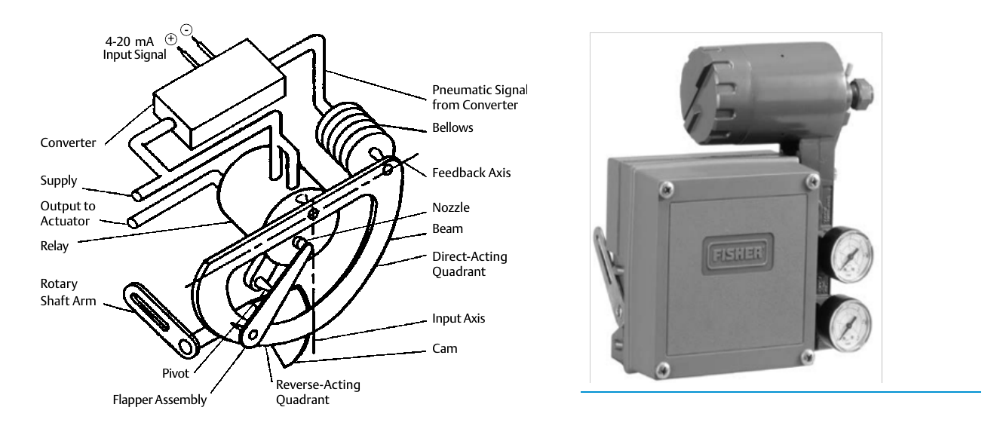

How an Analog I/P Positioner Works

- 1A 4-20 mA current signal drives the converter, which produces a proportional pneumatic signal at the bellows
- 2From there, the same beam / feedback-axis / nozzle-flapper / relay loop as the pneumatic positioner sets the output pressure
- 3The assembled unit — converter housing, gauges, mounting bracket — bolted onto the actuator in place of a pneumatic positioner
After Control Valve Handbook, 6th ed., Figs. 4.2, 4.3 — used directly, combined side by side; own printed labels retained on the schematic. Component Index: cvh-cmp-4.2, cvh-cmp-4.3.